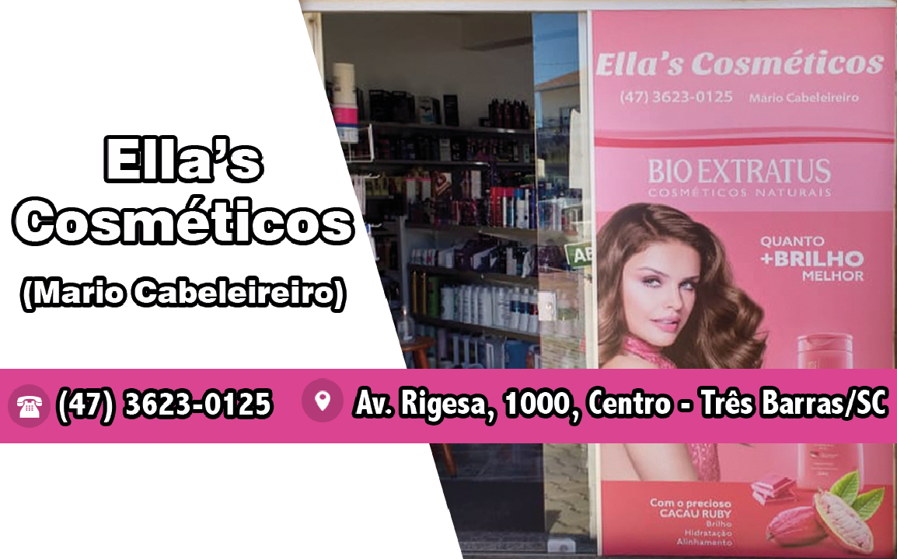
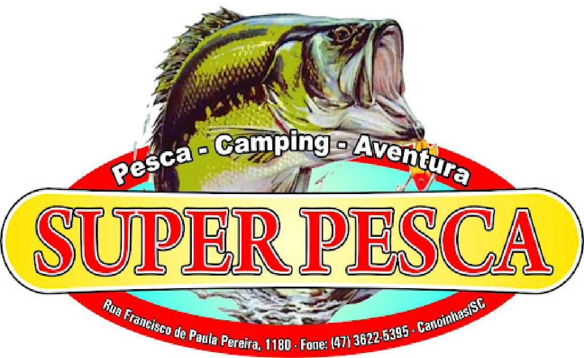
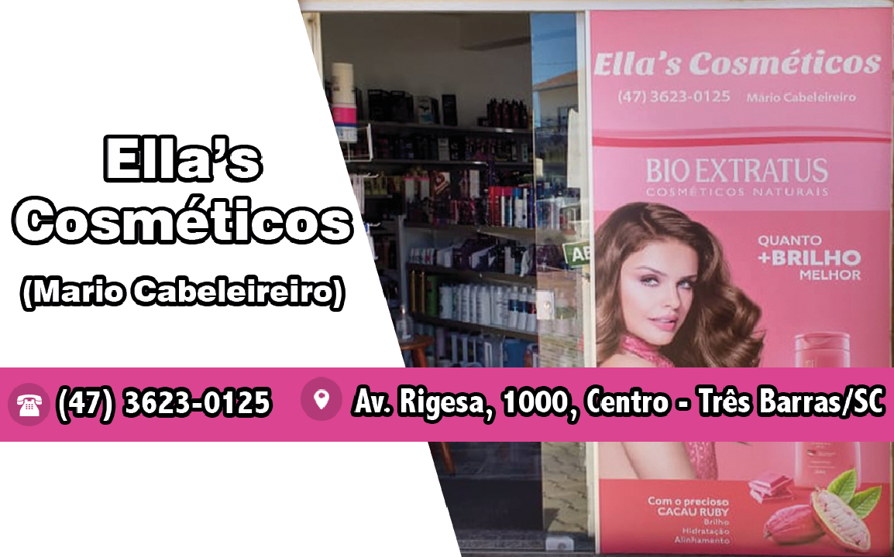
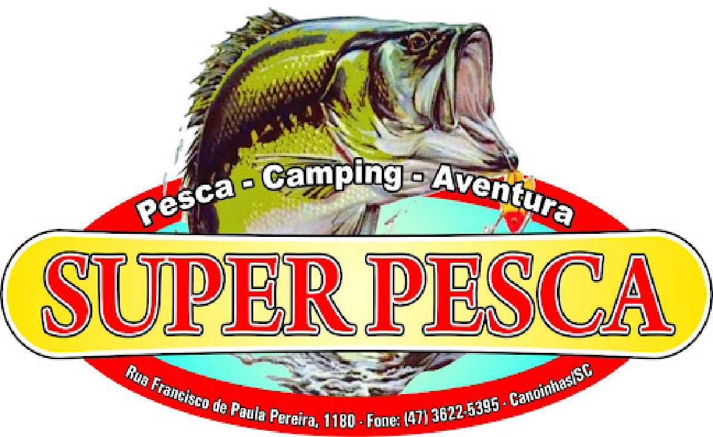

A ADC Juvenil sagrou-se campeã da Copa Champions de Futsal, em Joinville, neste domingo, 28, uma das maiores competições das categorias de base do estado.
Pela manhã, a equipe acompanhou o jogo da primeira semifinal entre o time de São José dos Pinhais jogando contra a equipe de São Bento do Sul. São Bento saiu ganhando de 4 a 0, mas o time de São José dos Pinhais conseguiu virar o jogo em 5 a 4, se classificando para a final. “Sabíamos que o time que iríamos enfrentar na final era um time muito forte”, disse o presidente e fundador do ADC Juvenil, Adinor da Silva.
Na semifinal, a ADC enfrentou a forte equipe de São João Batista e, em um jogo emocionante, conseguiu a classificação, ganhando de 6 a 2. Na grande final, contra o São José dos Pinhais, o time de Canoinhas conquistou a vitória inédita para a região, vencendo de 4 a 2 sobre a equipe adversária.
Além da vitória, o melhor goleiro e o melhor artilheiro da competição também são da ADC Juvenil. “Isso nos deixa feliz, queremos agradecer a todos que sempre estão nos prestigiando e pedir o apoio da comunidade. Esse é um projeto magnífico que está dando frutos. Em duas semanas tivemos dois títulos. Há uma semana ficamos campeões em Rio Negrinho e agora a Copa Champions, neste final de semana. Havia equipes fortes que haviam disputado o estadual e nós aqui, com o trabalho voluntário, nos dedicamos no final de semana, com muita garra e determinação, com muita vontade de vencer. Os meninos foram lá e fizeram bonito. Obrigado a Fundação Municipal de Esportes que cedeu o transporte e a todos os patrocinadores que nos ajudaram, que Deus abençoe a todos vocês”, agradeceu Adinor.
O time do Juvenil é um projeto desenvolvido junto ao Conselho Comunitário de Segurança (Conseg) 91, com apoio do 3.º Batalhão de Polícia Militar (BPM) de Canoinhas.


 



Rua. Carlos Wagner, 1194 - Campo d'Água Verde, Canoinhas - SC
Cep: 89466-320 - Tel: (47) 9 9704-5679 / (47) 9 8850-6627
E-mail: teuespaconoticias@gmail.com